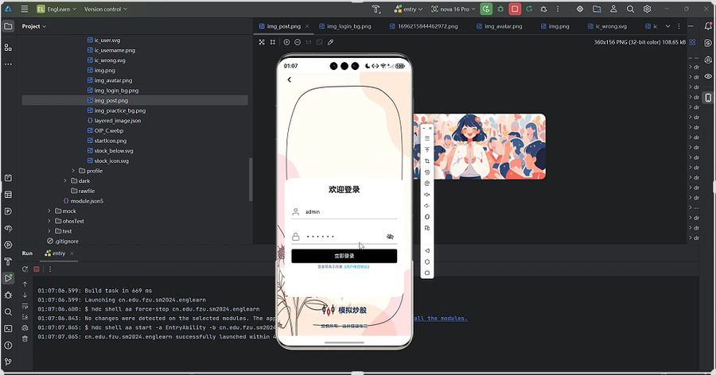
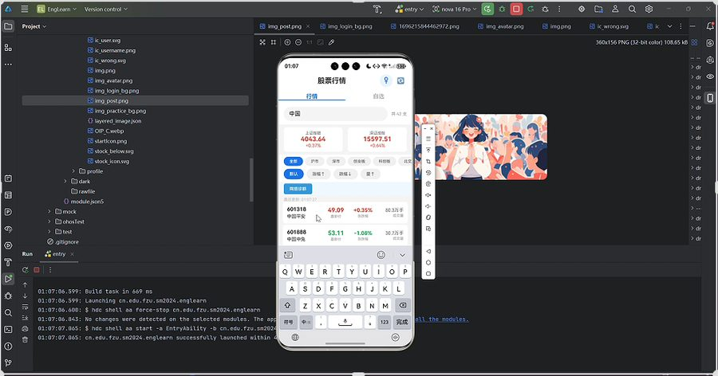
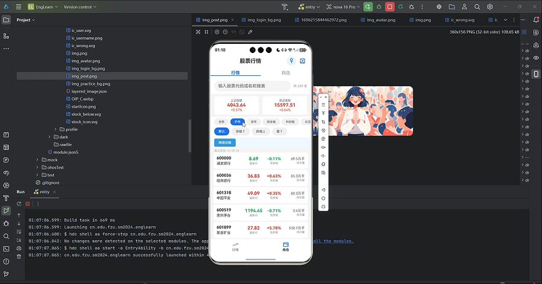
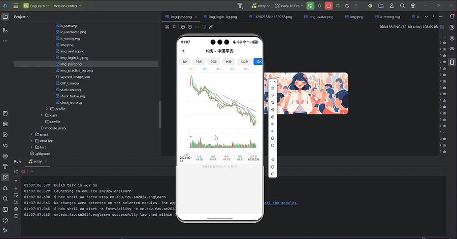
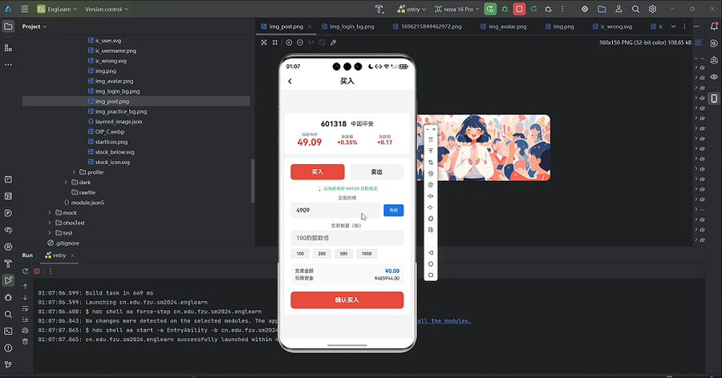
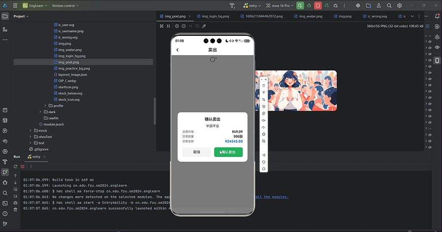
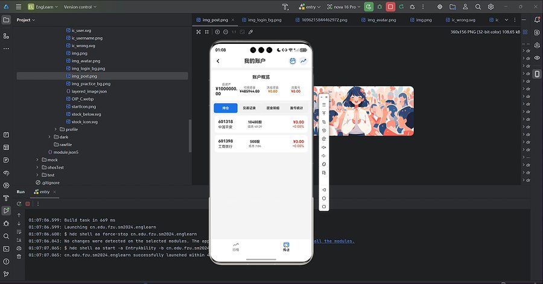
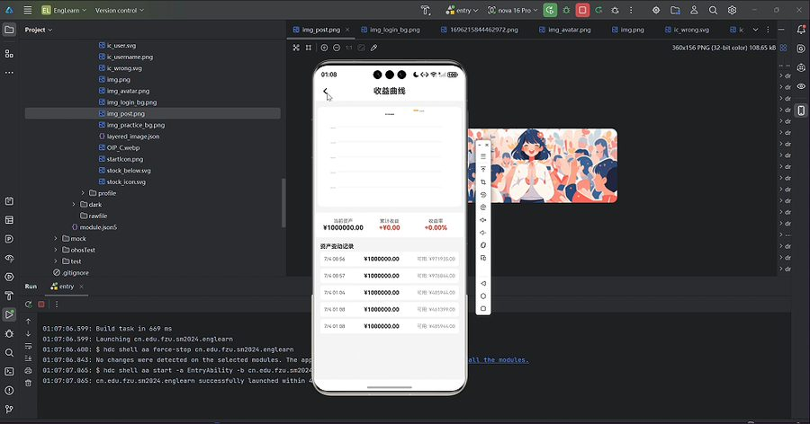
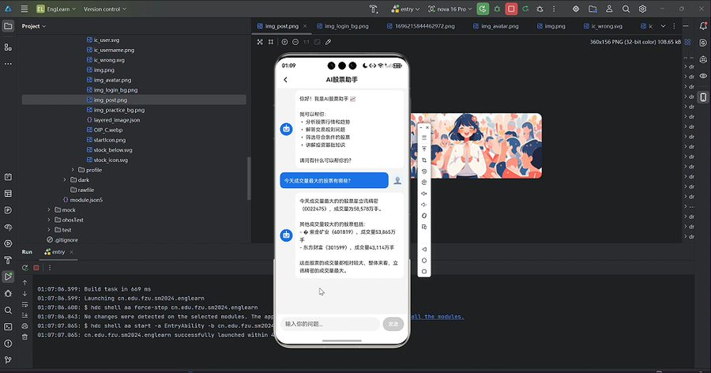

一、项目概述
模拟炒股应用的 HarmonyOS NEXT 原生版本。前端使用 ArkTS 声明式 UI（DevEco Studio，API 6.0.1），通过 @StorageLink + @Watch 装饰器实现跨组件状态同步，Canvas 组件自绘分时折线与 K 线蜡烛图；后端同样使用 Python Flask 代理对接新浪财经 API，交易数据经服务端 SQLite 持久化。覆盖全市场 6000+ 只 A 股行情、搜索（代码/中文/拼音）、自选管理、多周期 K 线、限价模拟交易、持仓盈亏、交易日历、收益曲线与 AI 助手。
| 技术栈 | ArkTS / ETS、ArkUI 声明式组件、@StorageLink/@Watch、Canvas、Preferences、http 模块 |
|---|---|
| 架构 | ArkTS 组件 → HTTP → Flask 代理 → 新浪财经 API → JSON → UI 状态更新 |
| 模块 | 登录 / 行情 / K 线 / 交易 / 持仓 / AI 助手 / 交易日历 / 收益曲线 |
二、功能演示视频
三、关键代码
3.1 数据模型与 @StorageLink 状态管理
entry/src/main/ets/model/Stock.ets (数据模型)
/**
* 股票数据模型
* 所有股票数据来源于网络API，本地不存储股票基础信息
*/
/**
* 股票实时行情
* 字段全部来自东方财富API
*/
export class Stock {
/** 股票代码，如：600000 */
code: string = '';
/** 股票名称，如：浦发银行 */
name: string = '';
/** 最新价 */
currentPrice: number = 0;
/** 涨跌幅（%） */
changePercent: number = 0;
/** 涨跌额 */
changeAmount: number = 0;
/** 成交量（手） */
volume: number = 0;
/** 今开 */
todayOpen: number = 0;
/** 昨收 */
yesterdayClose: number = 0;
/** 最高 */
highPrice: number = 0;
/** 最低 */
lowPrice: number = 0;
/** 市场板块 */
market: string = '';
constructor() {}
}
/**
* 大盘指数
*/
export class MarketIndex {
/** 指数代码，如：1.000001 */
code: string = '';
/** 指数名称 */
name: string = '';
/** 最新点位 */
currentPrice: number = 0;
/** 涨跌幅（%） */
changePercent: number = 0;
/** 涨跌点数 */
changeAmount: number = 0;
constructor() {}
}
/**
* 交易记录模型
* 本地RDB存储，用于记录用户交易历史
*/
export class Trade {
/** 交易ID，主键 */
id: number = 0;
/** 用户ID */
userId: number = 0;
/** 股票代码 */
stockCode: string = '';
/** 股票名称 */
stockName: string = '';
/** 交易类型：BUY-买入，SELL-卖出 */
tradeType: string = '';
/** 挂单价格（用户设定的限价） */
limitPrice: number = 0;
/** 成交价格（实际成交价，挂单未成交时为0） */
tradePrice: number = 0;
/** 交易数量（股） */
tradeQuantity: number = 0;
/** 交易金额 */
tradeAmount: number = 0;
/** 交易时间 */
tradeTime: string = '';3.2 网络服务：http 模块 + Flask 代理
entry/src/main/ets/service/StockApiService.ets (API服务)
/**
* 股票联网数据服务
* 通过本机Flask代理服务器获取新浪财经实时A股行情数据
* 模拟器通过 http://10.133.10.88:5000 访问本机服务器
* 网络不可用时自动切换到模拟数据
*/
import { http } from '@kit.NetworkKit'
import { Stock, MarketIndex } from '../model/Stock'
// ==================== 服务器配置 ====================
/** 代理服务器地址 */
const SERVER_IP: string = 'http://10.133.10.88:5000'
/** 最大重试次数 */
const MAX_RETRY: number = 2
/** 请求超时（毫秒） */
const REQUEST_TIMEOUT: number = 20000
// ==================== 服务器响应接口定义 ====================
/** 新浪股票数据（服务器解析后的格式） */
interface SinaStockData {
code: string;
name: string;
currentPrice: number;
todayOpen: number;
yesterdayClose: number;
highPrice: number;
lowPrice: number;
volume: number;
amount: number;
changeAmount: number;
changePercent: number;
market: string;
}
/** 股票列表响应 */
interface StocksResponse {
stocks: SinaStockData[];
count: number;
total: number;
page: number;
hasMore: boolean;
}
/** 单支股票响应（直接是SinaStockData） */
// 直接使用SinaStockData
/** 指数响应 */
interface IndicesResponse {
indices: SinaStockData[];
}
/** 搜索响应 */
interface SearchResponse {
stocks: SinaStockData[];
count: number;
}
/** 批量行情响应 */
interface BatchResponse {
stocks: SinaStockData[];
}
/** K线数据项 */
interface KLineItem {
day: string;
open: number;
high: number;
low: number;
close: number;
volume: number;
}
/** K线响应 */
interface KLineResponse {
kline: KLineItem[];
count: number;3.3 K 线页：Canvas 自绘多周期图表
entry/src/main/ets/pages/KLinePage.ets (K线图)
/**
* K线图页面
* 蜡烛图 + 成交量柱状图 + 5/10/20/30/60日均线
*/
import { router } from '@kit.ArkUI'
import { http } from '@kit.NetworkKit'
interface KLineItem {
day: string
open: number
high: number
low: number
close: number
volume: number
}
interface KLineResponse {
kline: KLineItem[]
count: number
}
const SERVER_IP: string = 'http://10.133.10.88:5000'
@Entry
@Component
struct KLinePage {
@State stockCode: string = ''
@State stockName: string = ''
@State klineData: KLineItem[] = []
@State isLoading: boolean = false
@State errorMsg: string = ''
@State selectedScale: string = '240'
@State infoDay: string = '--'
@State infoOpen: string = '--'
@State infoClose: string = '--'
@State infoHigh: string = '--'
@State infoLow: string = '--'
@State infoVol: string = '--'
@State infoIsRise: boolean = true
@State chartReady: boolean = false
private mainSettings: RenderingContextSettings = new RenderingContextSettings(true)
private mainCtx: CanvasRenderingContext2D = new CanvasRenderingContext2D(this.mainSettings)
private volSettings: RenderingContextSettings = new RenderingContextSettings(true)
private volCtx: CanvasRenderingContext2D = new CanvasRenderingContext2D(this.volSettings)
private cw: number = 360
private ch: number = 300
private vh: number = 80
private maData: Map<string, number[]> = new Map()
aboutToAppear(): void {
const params = router.getParams() as Record<string, string | number>
this.stockCode = (params.stockCode as string) || ''
this.stockName = (params.stockName as string) || ''
const scaleParam: string = (params.scale as string) || ''
if (scaleParam === '5') {
this.selectedScale = '5'
}
this.loadKLineData()
}
calcMA(data: KLineItem[], period: number): number[] {
const result: number[] = []
for (let i = 0; i < data.length; i++) {
if (i < period - 1) {
result.push(NaN)
} else {
let sum: number = 0
for (let j = i - period + 1; j <= i; j++) {
sum += data[j].close
}
result.push(sum / period)
}
}
return result
}
async loadKLineData(): Promise<void> {
this.isLoading = true四、界面截图









五、测试与总结
- 模块测试：登录（admin/123456）、板块筛选、拼音搜索、K 线渲染（红涨绿跌）、交易校验全部通过；
- 集成测试：登录→行情→搜索→K 线→下单→持仓→收益曲线全链路数据流转正常；
- 总体测试：HarmonyOS 模拟器完整运行，页面滑动流畅。
通过本项目深入掌握了 ArkTS 声明式 UI 范式、eTS 状态装饰器体系与 Canvas 自绘能力，验证了同一业务在双平台（Android / HarmonyOS）的工程化落地路径。